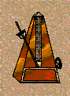
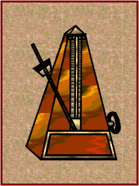

Llamamos aire o movimiento a la velocidad con que se ejecuta una obra. Se expresa con una palabra italiana colocada al principio de la obra sobre el pentagrama. Los aires principales son:

-Largo Muy despacio.-Larghetto Menos lento que largo.
-Adagio Despacio.
-Andante Sin demasiada lentitud.
-Andantino Más movido que andante.
-Moderato Con moderación.
-Allegreto Alegremente, pero sin correr.
-Allegro Aprisa.
-Presto Rápido.
-Vivo Deprisa y con viveza.
Existen otras palabras o abreviaturas
que pueden aparecer en cualquier momento de una obra y que también pueden
alterar el movimiento aunque se trate sólo de un compás, un fragmento o el
resto de la obra. Estos son:
Accelerando (accel.) Acelerando.
Rallentando (rall.) Moderando.
Ritardando (rit.) Retardando.
Ritenuto (riten.) Retenido.
Ad
libitum (ad libit.) A voluntad.
A tempo (a tpo.) A tiempo.

EL METRÓNOMO: Es un aparato que sirve para marcar un ritmo constante. Se trata de una varilla con un contrapeso que se mueve como un péndulo hacia arriba. Al variar la posición del contrapeso, la varilla se mueve con mayor o menor rapidez. La varilla se encuentra graduada y cada grado de la varilla indica el número de oscilaciones de la varilla por minuto.
Así que si encontramos en una canción, en vez de
allegro o vivo, un número y una nota, el número indica dónde colocar el
contrapeso del metrónomo y la nota el valor de cada oscilación.
Equivalencias aproximadas:
Largo, 50 oscilaciones por minuto; Adagio, 70; Andante,
de 80 a 100; Allegro, 120-150; Presto, de 160 a 200.